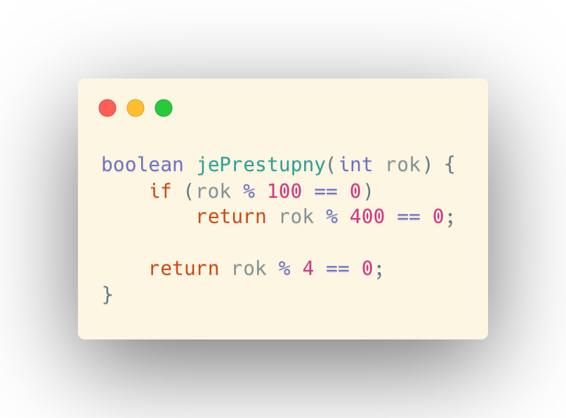
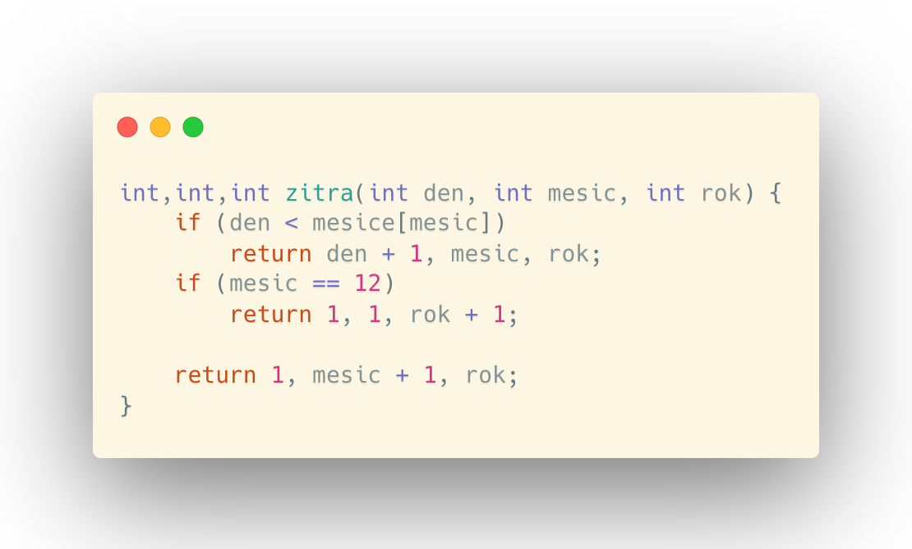

V poslední kapitole se podíváme na základní algoritmy kalendáře.
PŘESTUPNOST ROKU
Přestupný rok je ve dvou případech:
- Celá století jsou beze zbytku dělitelný číslem 400.
- Rok je beze zbytku dělitelný číslem 4.
Napíšeme tedy metodu, která bude vracet boolean vypovídající o tom, zda rok, jež dostal program v hlavičce metody, je přestupný.
KALENDÁŘOVÉ ALGORITMY
V kalendářových algoritmech většinou používáme globální pole měsíců v roce. To definujeme takto:
int unor = jePrestupny(rok) ? 29 : 28;
int mesice = new int[] {0, 31, unor, 31, 30, 31, 30, 31, 31, 30, 31, 30, 31};
Nula v prvním prku pole je proto, abychom nemuseli řešit indexaci pole od 0, když chceme dostat prvek z pole na určitém indexu.
Zítřejší den
Nyní napíšeme algoritmus, který bude vracet zítřejší datum vzhledem ke dni z hlavičky metody. Pro zjednodušení bude vracet hodnotu int, int, int reprezentující den, měsíc a rok. Nejdříve metoda ověří, zda se nemění měsíc. Když ne, pak vypíše stejné datum s dnem, který má o 1 větší hodnotu. Dále se podívá, jestli se nemění rok, když se mění měsíc. Pokud ano, pak vrátí datum 1, 1 s rokem o 1 větším. Následně vrátí datum 1, s měsícem o 1 větším a stejný rok.
